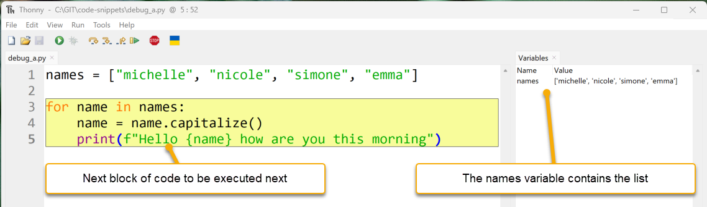
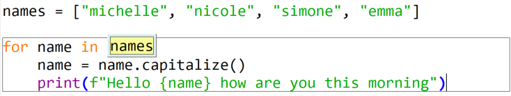
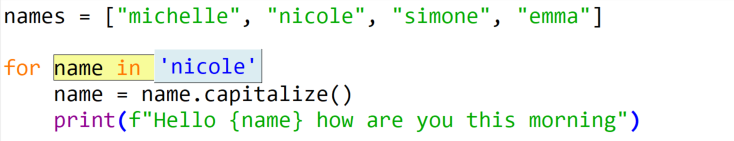
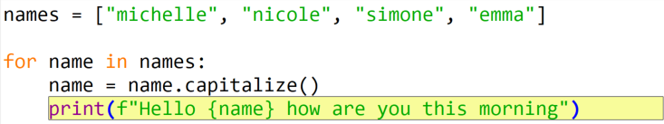
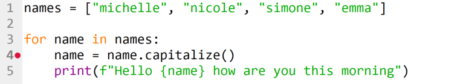
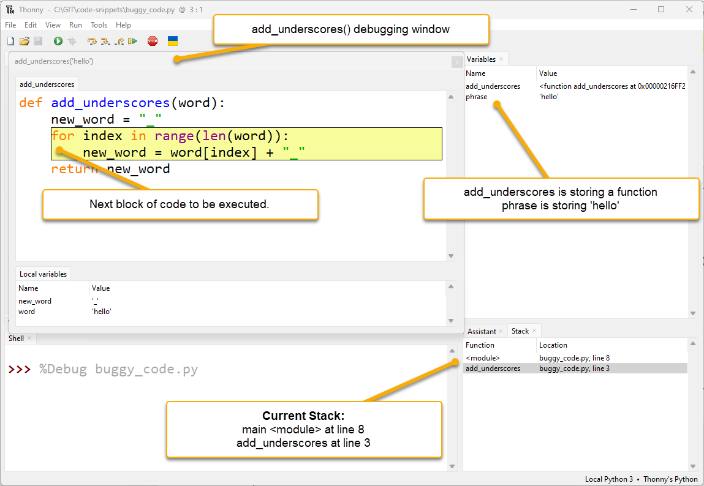
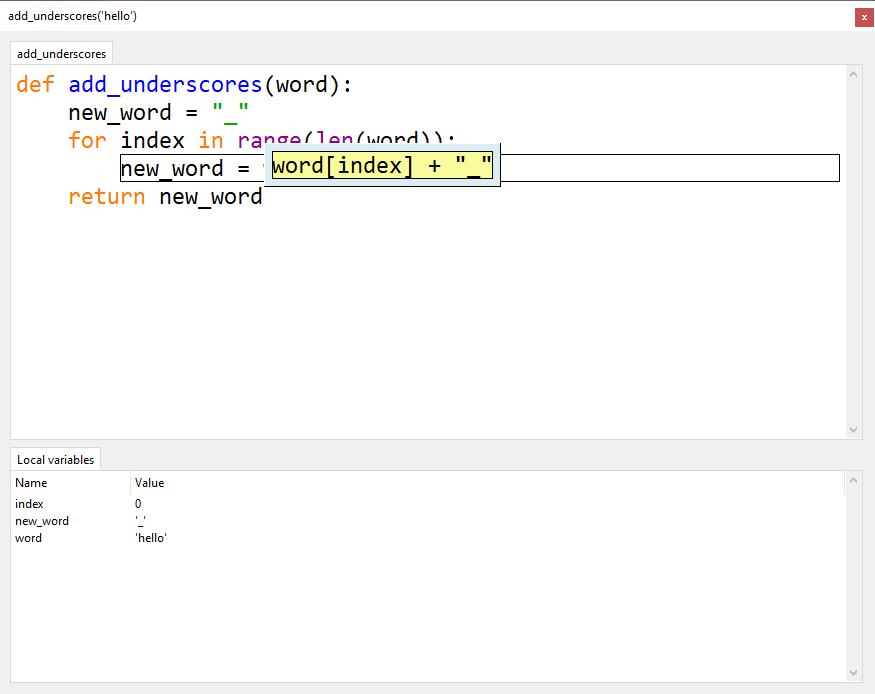

Debugging with Thonny#
Programming mistakes#
Everyone makes mistakes—even seasoned professional developers!
Python is good at catching mistakes like syntax errors and run-time errors. Unfortunately, there is a third type of error that you may have already experienced. Logic errors occur when a valid program doesn’t do what the programmer intended.
For example, type the code below and save it has buggy_code.py.
For this tutorial download buggy_code.py file and save it to your lesson folder.
1def add_underscores(word):
2 new_word = "_"
3 for index in range(len(word)):
4 new_word = word[index] + "_"
5 return new_word
6
7phrase = "hello"
8print(add_underscores(phrase))
The expected output is _h_e_l_l_o_. Run it and you will see it actually outputs o_.
Logic errors cause unexpected behaviours called bugs. Debugging is process of removing bugs. A debugger is a tool that helps the programmer hunt down bugs and understand what’s happening.
Knowing how to find and fix bugs in your code is a skill that you will use for your entire coding career!
Using Thonny’s Debugger#
To debug buggy_code.py we need to understand the debugging tools we have at our disposal. Thonny has a debugger built-in, but before we explore it, we need to make sure you have the correct setup.
Open the View menu and ensure there is a tick beside both Stack and Variables.

To enter into Thonny’s Debugger click on the Debug button.

Controlling the debugger#
To see how the debugger works, let’s start by writing a simple program without any bugs.
Type the following into Thonny and save it as debug_a.py:
1names = ["michelle", "nicole", "simone", "emma"]
2
3for name in names:
4 name = name.capitalize()
5 print(f"Hello {name} how are you this morning")
Now start Thonny’s debugger.
Your Thonny should now look like the image below:

Code Panel: Thonny has paused the execution of the code. The yellow highlight shows the code that Python will execute next.
Variables Panel: Since the program hasn’t assigned any values, it shows no variables.
Shell Panel: %Debug launches is the command that launches the program (debug_a.py).
Stack Panel: Shows the current function and module that is running.
Something else has happened, other debugging buttons are now available.

Lets see how they work.
Step into button#
Click the Step into button. Thonny will now execute the previous highlighted code block. The new highlighted code indicates the part of the code to Python will execute next. In this case it is the list ["michelle", "nicole", "simone", "emma"].

Clicking Step into again highlights "michelle". This shows that Python will now evaluating this item.
Continuing and the "michelle" turns blue indicating that Python has read it.

Four more Step into clicks (or pressing F7 on your keyboard), and Python has read all the strings.

The next Step into shows that Python is now ready to write the list into the variable names.

The next Step into highlights the next block of code Python will process. The Variables panel shows that names now stores ["michelle", "nicole", "simone", "emma"].

Notice that the highlight covers more than one line. Thonny is highlighting all the code that is part of the for loop. We’ll now step through it.
Click Step into and it shows that the next executed code is names. This is the first element of the for statement.

A further Step into replaces names with the list stored in names.

Since this is a for loop, the next Step into reads the first element of the list (‘michelle’).

Clicking Step into highlights line 4. michelle is now stored in the name variable as displayed in the Variables panel.
Note
Do not confuse name with names. They’re very close, but Python is very precise.

The next three Step into clicks:
highlights the
name.capitalize()highlights
namereplaces
namewith'michelle'

The next three Step into clicks:
applies the
capitalize()method to'michelle'changes
'michelle'to'Michelle'overwrites the value in
namewith'Michelle'
Line 4 is now complete, so line 5 is now highlighted.

The next five Step into clicks show how Python processes an f-string and prints it to the terminal. It also shows that a call to the print() function returns a None value.

One more click on Step into returns to line 3. The for statement, has taken the next element from the names list ('Nicole').

Click Step into one more time and Python stores 'Nicole' in name.
We will use the next iteration of the for loop investigate how Step over works.
Step over button#
The Step over function processes the highlighted code without going into the details. The next click of Step over:
takes the value stored in name (‘nicole’)
capitalizes it to ‘Nicole’
writes it back to name.

Click the Step over button and you will see the results below. Notice the value stored in name.

Clicking Step over again executes line 5. The highlight then returns to the line 3 for statement.
When to use Step over
Use Step over when you know that the highlighted code is bug free. Executing working code helps find the bug location quicker.
Click Step over and then Step into to move your code to the position below, so we can now look at the Step out.

Step out button#
The Step out completes the rest of the currently highlighted code. Look back at the last example, and notice the grey box around line 4? This box indicates that we have stepped into line 4 and are processing it. Click Step out and Thonny will move back up a level to highlight all line 4.

Clicking Step out again will move back up one level. The debugger is now to outside the for loop and the program will finish.
Resume button and breakpoints#
The last button we need to look at is the Resume button. This works in conjunction with breakpoints. The Resume button will execute the code until it finds a breakpoint, then it will pause**.**
To add a breakpoint to your code, click on the line number that you wish to pause the program on.
Let’s try this out. Click on the line number 4. A red dot should appear between the number and the code panel (as below):

Now click Debug.
Notice that the program runs and then pauses at the breakpoint. At this point, you can check the current values of the variables.

The next Resume click will restart the program. The debugger will pause at the next breakpoint. This is also line 4 on the second iteration of the for loop.
Hint
Notice the changed values in the variables panel.
Now that we know how to control Thonny’s debugger, let’s go back and debug buggy_code.py.
Debugging a Logic Error#
First let’s look closely at buggy_code.py:
1def add_underscores(word):
2 new_word = "_"
3 for index in range(len(word)):
4 new_word = word[index] + "_"
5 return new_word
6
7phrase = "hello"
8print(add_underscores(phrase))
Guess the bug is location#
The first step is to identify the section of code that is likely to contain the bug. You may not be able to identify exactly where the bug. So, make a reasonable guess about which section of your code has an error.
Notice that there are two distinct sections of the program:
a function definition →
lines 1to5main code block
line 7→ defines a variablephrasewith the value"hello"line 8→ then prints the result of callingadd_underscores(phrase)
Look at the main section:
7phrase = "hello"
8print(add_underscores(phrase))
Do you think the problem could be here? It doesn’t look like it, right? Everything about those two lines of code looks good. So, the problem must be in the function definition:
1def add_underscores(word):
2 new_word = "_"
3 for index in range(len(word)):
4 new_word = word[index] + "_"
5 return new_word
The first line of code inside the function creates a variable new_word with the value "_". You’re all good there, so you can conclude that the problem is somewhere in the body of the for loop.
Set a breakpoint to inspect code#
Now that we’ve identified where the bug must be, set a breakpoint at the start of the for loop. This way we can trace out exactly what’s happening inside the loop with the debugging tool:

Click the Debug button to launch Thonny’s debugger. Thonny will run the code until it hits the breakpoint. Your IDE should look like the image below. There are some new features we haven’t seen before.

additional debugging window:
notice that Thonny has launched a new debugging window for
add_underscores('hello')function.Whenever a Python enters a new scope Thonny will launch a debugging window for that scope.
The values stored in the local variables are at the bottom of the new window.
Local variables are variables that only the current function can see.
multiple stack values:
in the stack panel you will now see two values.
first value
refers to the main section second value refers to the add_underscores function section
This shows us that the program is at:
line 8in the main programline 3of the add_underscores function section.
Stack timeline
line 8in the main module called theadd_underscoresfunctionPython pauses the main section at
line 8at wait for theadd_underscoresfunction to finishWhen the function finishes, the main section will continue from
line 8onwards.
Back to debugging. Notice the add_underscores window displays the word and new_word variables. Currently, word has the value 'hello' and new_word has the value '_', as expected.
Let’s look further.
Click:
Step into once
Step over twice
You should end up with new_word = word[index] + "_" highlighted and ready to process (like below).

Notice the local variable index is storing 0. This is correct for the first iteration of the loop.
Hint
If you can’t see the index variable, you may need to resize the Local variables panel.
Now click Step over to execute new_word = word[index] + "_" and have a look at the results.

Notice that new_word is now storing 'h_', whereas we want it to be storing '_h_'. What happened there? We have found our error location.
Now that we know the error is in the new_word = word[index] + “_” code. Let’s investigate that code and see exactly what happened.
First click Stop and then Debug again.
Click:
Step into once
Step over twice
You should now have the problem code highlighted (like below).
This time we will step into the code and see what happens.
First Step into and everything looks good.

Second Step into everything is still fine.

Third Step into, all good.

Keep click Step into and follow what is happening in the Local variables. Stop when your add_underscores('hello') is in the state below:
Looking closely at the debugging code. You will notice:
Python is about to assign the value of
'h_'tonew_wordThis is not right!
We want it to assign
'_h_'tonew_word
Now we know exactly where the problem is, we need to work out why this is a problem.
add_underscores() is supposed to insert a _ between each letter. It does this by repetitively concatenating the next letter and _ to the value stored in new_word.
But our code is overwriting new_word. We are loosing all the previously processed letters.
What we need to do is concatenate the current value of new_word in front of the processed letter and _.
The line should read new_word = new_word + word[index] + "_"
Stop the debugging, make the change to the code below.
Run the program normally. Is the output _h_e_l_l_o_?
Problem solved. You have now successfully debugged faulty code.